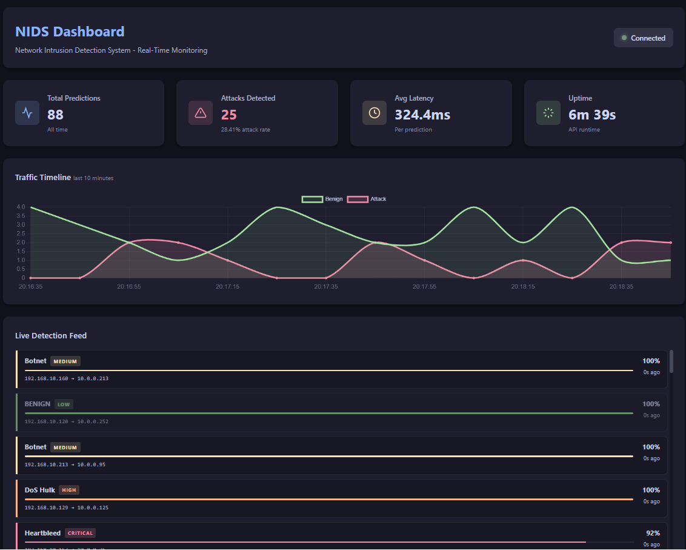
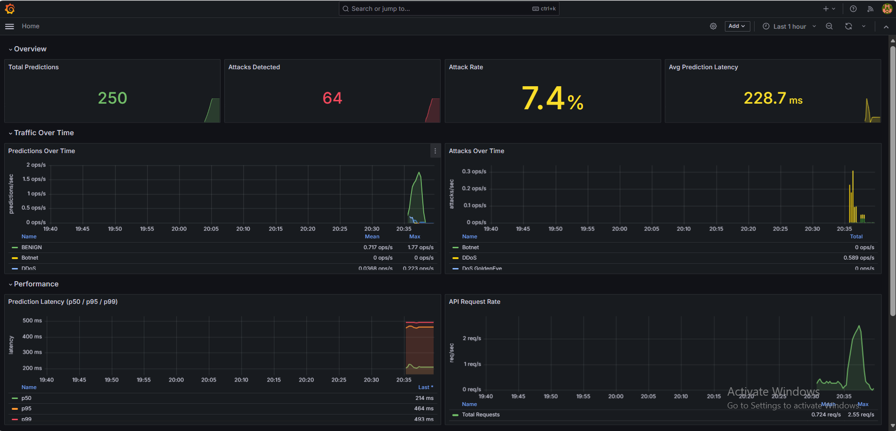
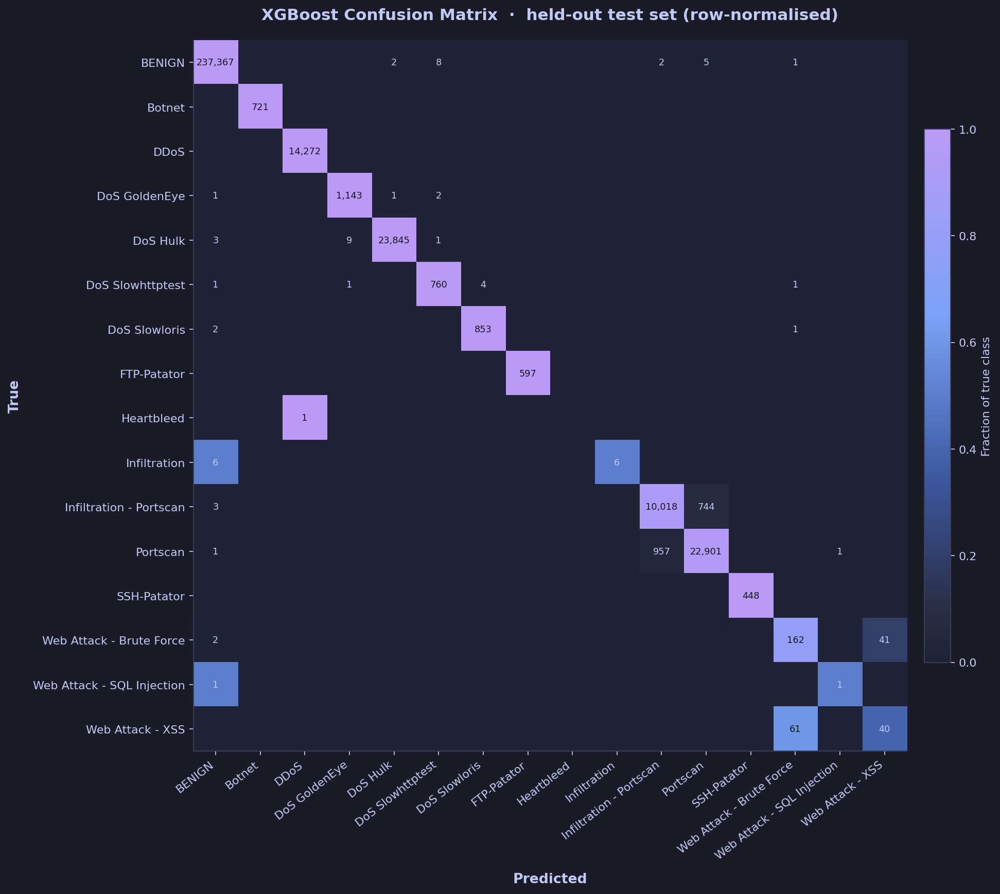
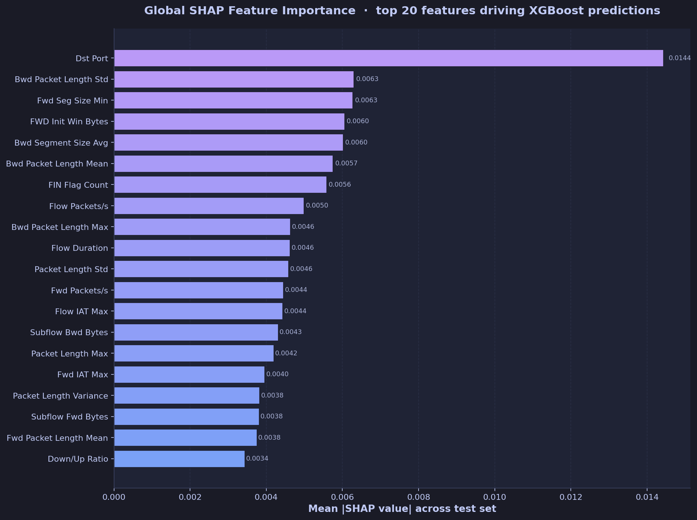
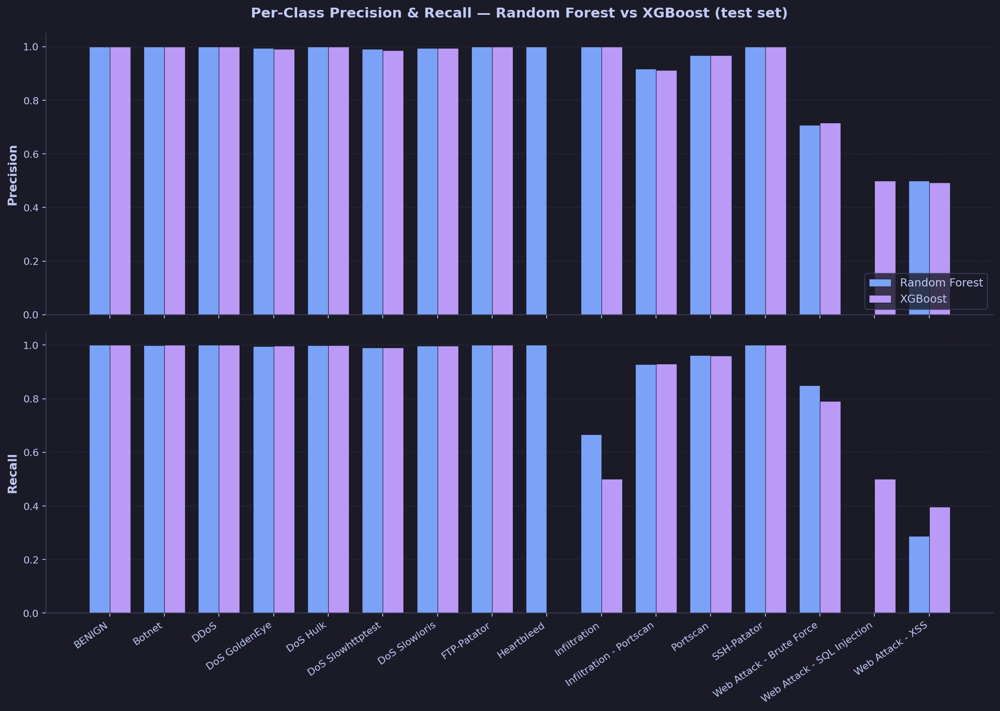
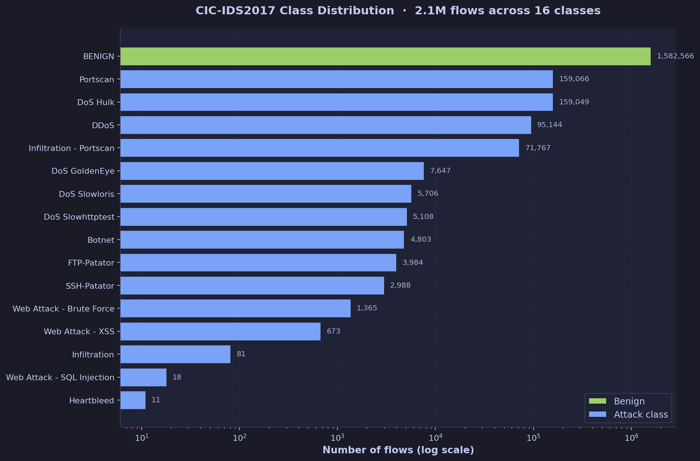

01 · Abstract
What this project does
Signature-based Intrusion Detection Systems fail on novel attacks — they can only match what they've already seen. This project builds a machine-learning NIDS that learns statistical patterns of benign and malicious traffic from the CIC-IDS2017 dataset and classifies live network flows in real time.
A soft-voting ensemble of a Random Forest and an XGBoost classifier distinguishes 15 distinct attack types (DDoS, Port Scan, Brute Force, Botnet, Heartbleed, Web Attacks, DoS variants, Infiltration) from benign traffic. Every prediction ships with a SHAP attribution showing the five features most responsible for the decision — addressing the explainability gap that normally makes ML-based security tooling unauditable.
The classifier is served by a FastAPI REST service with rate limiting, Prometheus metrics, and a Grafana dashboard. A real-time engine captures live packet traffic with Scapy, aggregates it into 5-tuple bidirectional flows, extracts the 84 CIC-IDS2017 features, and posts them to the API — demonstrating the full pipeline from wire to prediction to alert.
02 · Architecture
Two decoupled tiers
The system is deliberately split into a stateless classification service and a live-traffic capture engine. Decoupling lets the service be evaluated and benchmarked independently of any deployment environment, while the engine adapts to whichever network it runs on.
Why decouple?
The API is language-agnostic, horizontally scalable, and independently deployable. Any consumer that can produce a flow feature vector — the real-time engine, a batch job, a PCAP analyser — can query it identically.
Why threaded predictions?
A single prediction round-trip is 10–100 ms. A ThreadPoolExecutor of four workers lets the engine's main loop immediately continue processing new packets while predictions complete asynchronously.
Why RF + XGBoost?
Tabular flow features don't benefit from deep-learning inductive biases. Tree ensembles train faster, admit exact SHAP attribution, and the RF/XGB pairing combines variance reduction (bagging) with bias reduction (boosting).
03 · Live Demo
System in action
End-to-end run of the demonstration traffic simulator replaying CIC-IDS2017 attacks against the live API. The Flask dashboard shows detections streaming in via Server-Sent Events, with SHAP attributions expanding on click.


04 · Results
Evaluation
Test accuracy (311,746 flows)
99.44%
XGBoost · macro-F1 0.834
Test accuracy (311,746 flows)
99.40%
Random Forest · macro-F1 0.873
Randomised balanced
91.9%
± 1.2% · 95% CI [90.5, 93.3]
Classes at ≥80% accuracy
13/15
XSS and Web-BF limited by data




05 · Technology Stack
Built with
Python 3.11
Primary language
scikit-learn
Random Forest · SMOTE · scaling
XGBoost
Gradient boosting ensemble
SHAP
TreeExplainer · per-prediction attribution
Scapy
Live packet capture · BPF filtering
FastAPI
REST API · Swagger · Pydantic
Flask
Operator dashboard · SSE
Prometheus + Grafana
Metrics · 11-panel dashboard
Docker
Compose stack · multi-stage build
07 · About
About the author
Folosiye Adegbola
BSc (Hons) Software Development · SETU
This project was completed as my Final Year Project at South East Technological University. I'm interested in the intersection of machine learning and cybersecurity — specifically in making ML-based security systems auditable, deployable, and explainable rather than black-box curiosities.
The supervisor, examiners, and the Canadian Institute for Cybersecurity (for the CIC-IDS2017 dataset) are gratefully acknowledged.